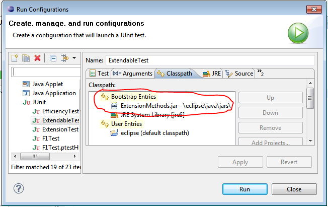

<pre>
To use extension methods you need to 1 of the do the follow:

Add the following to your VM arguments

-Xbootclasspath/p:c:\\path\\to\\ExtensionMethods.jar


Add the jar as Bootloader Jar ahead of everything
</pre>
